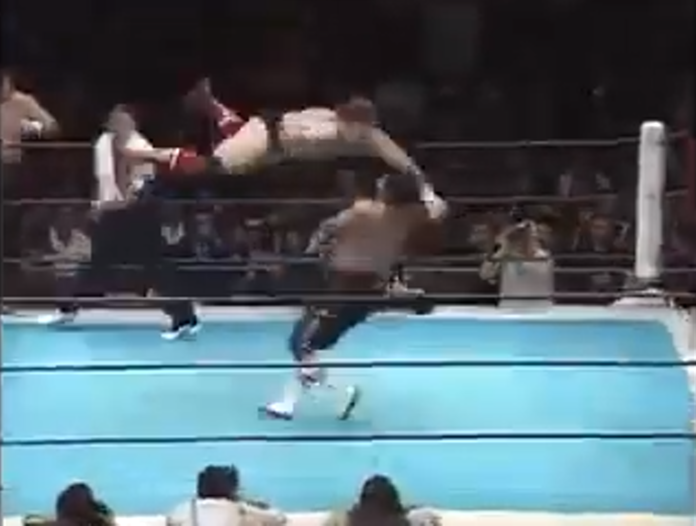

Taker and his flying punch
NJPW Big Fight Series 1990 - Tag 1
Tag Team Match
2/3/1990
Notable for being only one of a few matches Undertaker wrestled in Japan, and only one of two I can find online, this is a pretty standard tag bout with some moments of greatness for the future Deadman. His flying punch looks fantastic and his step-out top rope elbow finish is impressive. Masa Saito's side suplex to Bam Bam is also pretty good. Nothing much else of note though.
Rating: 2.25
Recommended to people interested in Undertaker's run before he got to the WWF.